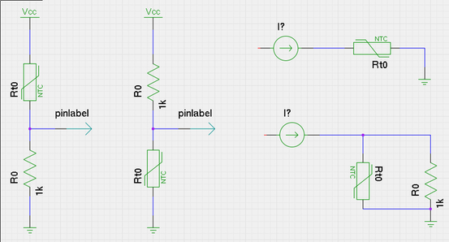
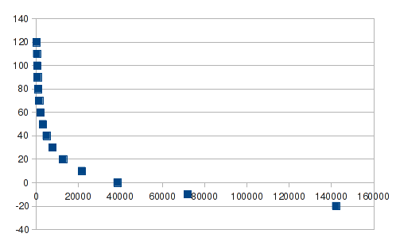
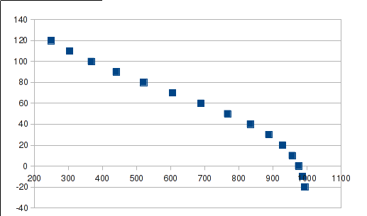
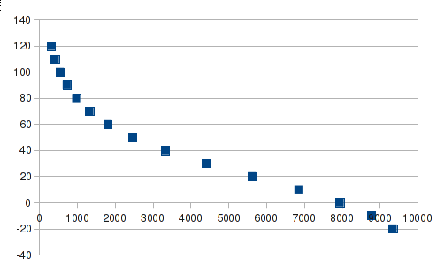

NTC电阻的用法对比
NTC电阻，全称是负温度系数电阻，详见wiki。主要用来进行温度检测或者过温保护，温度检测的精度不是很高，但比温感会便宜不少，体积上也占优势，因而应用面应该还是挺广的。
最近接触了一下这方面的资料，从电路上看可能会有4种接法（忽然想起“回”字有四种写法。。）

遇到的主要是两个问题：
- 按照图中右上角的接法，常温和高温下检测温度偏差比较大
- 程序中需要进行非线性拟合
常温和高温下检测温度偏差比较大
如果NTC直接通过电流源驱动，检测端口AD值的话，由于NTC的电阻值随着温度是指数关系，导致在常温和高温下检测值比较小的变化就会导致温度拟合值比较大的变化，如下图所示，横轴是检测值（Q10），纵轴是温度，可见在常温和高温部分，检测值变化很小，导致分辨率较低。

PS:这里刚开始想用spice进行仿真，发现NTC建模也是一门学问，可以参考网上的方法，主要思路是用电流源来模拟电阻。想想自己的仿真实在是不熟练，后来还是直接使用表格软件还方便一些。
后来搜索一圈发现NTC一般接法主要是剩下的3种方式，数学上相当于在对数运算上加了一个倒数，使得在一定范围内可以达到局部线性的效果。前两种的效果类似，如图

用内部电流源的话，一般使用并联电阻的方式，虽然在高温部分斜率还是较大，好处是局部线性的同时，使用片内电流源比使用外部参考电压的方式得到的数值更为准确。

程序中需要进行非线性拟合
小型CPU由于计算资源和函数库的关系，对某些复杂计算显得力不从心，这里实现主要使用了查找表加上线性插值的思路，具体实现上可以参考下篇文章
blog comments powered by Disqus
介一个IT民工甲，Firmware，嵌入式，数字电源，伪Geek，
80后伪奋青，Canon 450D，Arch Linux，Kindle，一介书生
www.jieyige.com